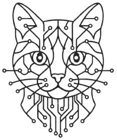

Learning log — IT & cybersecurity
This is a working log of things I am learning and building.
Currently studying for the CompTIA A+ certification, with a long-term interest in cybersecurity and network engineering.
Everything here is a work in progress - Notes are rough, setups are experimental, and write-ups reflect where I am in the process rather than where I am going.
Working documents from the CompTIA A+ syllabus. Not polished guides — just notes that reflect where I am in the learning process.
📘 CompTIA A+ Daily LogLab environments built in VirtualBox. Windows and Linux installs, configuration notes, and things that went wrong along the way.
Beginner-level capture-the-flag write-ups. The goal is to build the habit of thinking methodically about security problems.
Small electronics and programming experiments. Basic input/output to start, and whatever else seems worth wiring up.